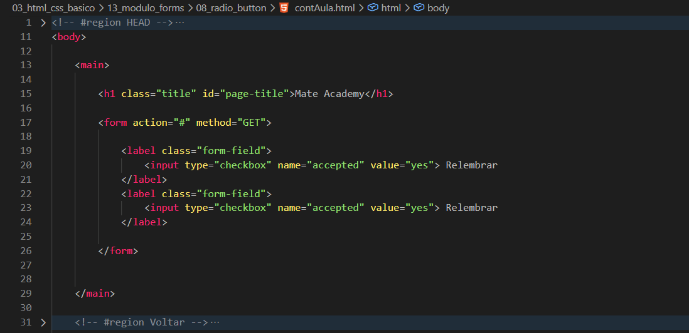
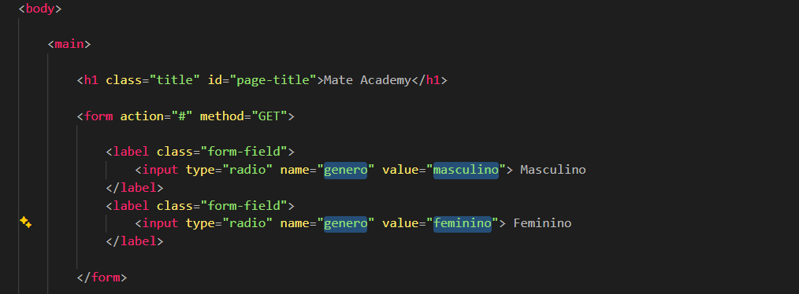

Radio Button
Intro
Agora iremos ver sobre escolhas unicas utilizando Radio Button.
Agora iremos ver sobre escolhas unicas utilizando Radio Button.
HTML:

Para comecarmos, iremos alterar nosso type="checkbox" para type="radio".
Com o type="radio", conseguimos permitir apenas uma unica escolha dentro de um grupo de opcoes.
Para isso funcionar corretamente, os elementos precisam possuir o mesmo atributo name, pois e ele que define quais radio buttons pertencem ao mesmo grupo.
Alem disso, tambem utilizamos o atributo value, que define qual valor sera enviado para o servidor quando uma opcao for selecionada.
Exemplo:

Com o checked, conseguimos definir uma opcao marcada por padrao (default) assim que a pagina for carregada.
A opcao que receber o atributo checked sera exibida inicialmente como selecionada.
Diferente do checkbox, o radio button permite apenas uma unica escolha dentro do mesmo grupo de name.
Conteudo da aula